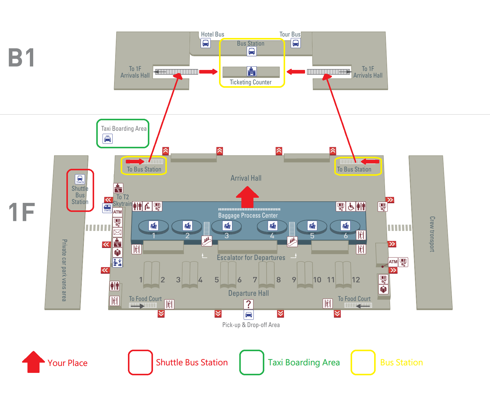
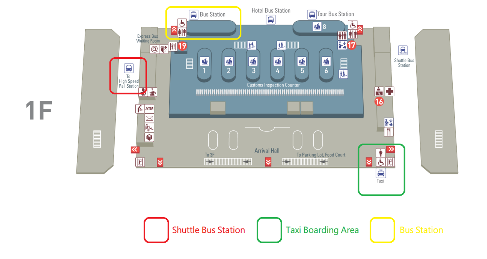
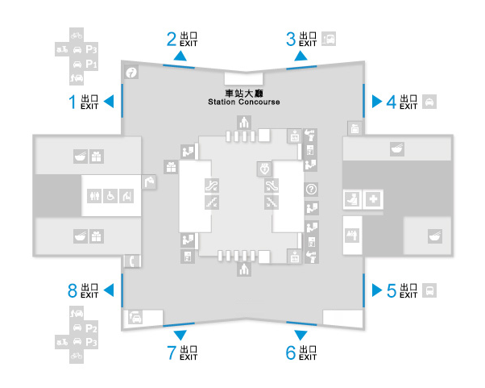
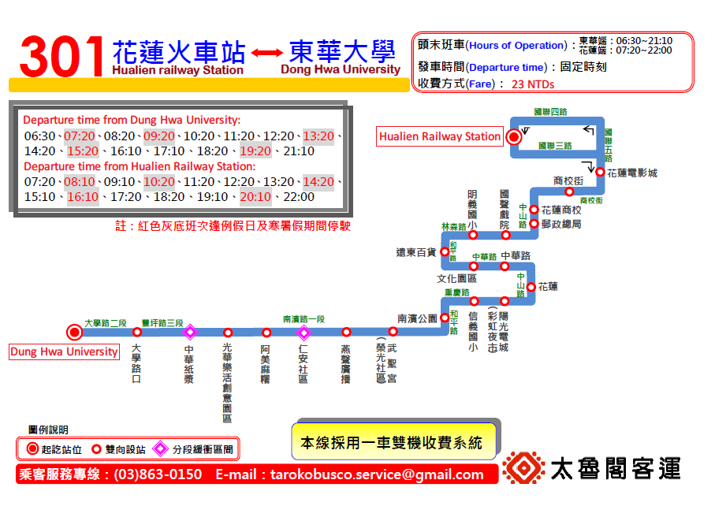

<head>
    <title>program</title>
    <script src="https://ajax.googleapis.com/ajax/libs/jquery/2.1.3/jquery.min.js"></script>
    <script src="js/main.js"></script>
    <link href="style/new.css" rel="stylesheet">
</head>
<div class="new" align="justify">
    <div class="trans">
<iframe src="https://www.google.com/maps/embed?pb=!1m14!1m8!1m3!1d1867297.1400702356!2d120.18774646005323!3d23.922761960370767!3m2!1i1024!2i768!4f13.1!3m3!1m2!1s0x3468a1572d830a5b%3A0x4786f81fb729e0d8!2z5ZyL56uL5p2x6I-v5aSn5a24!5e0!3m2!1sen!2stw!4v1427698508155" width="600" height="300" frameborder="30" style="border:1"></iframe>
        <ol class="none">
            <li>
                <h2>A.	From Taoyuan Airport</h2>
                <p>If you arrive at<a class="linkcaption2" href="http://www.taoyuan-airport.com/english/Index/"target="blank"> Taiwan Taoyuan Airport</a>,there are <strong>three steps</strong> to reach the Summer School venue</p>
                <ul class="none">
                        <li><b>1. From Taoyuan Airport to Taipei Railway Station.(Bus, THSR, Taxi)</b></li>
                        <li><b>2. From Taipei Railway Station to Hualien Railway Station.(Railway)</b></li>
                        <li><b>3. From Hwalien Railway Station to Dong Hwa University.(Shuttle)</b></li>
                </ul>
                <ol class="none">
                    <li>
                        <h4>From Taoyuan Airport to Taipei Railway Station</h4>
                        <p>There are three ways to reach <a class="linkcaption2" href=>Taipei Railway Station</a> from Taoyuan Airport.</p>
                        <p>You can follow the map of terminal I and terminal II to find the way to take Taiwan High Speed Railway, bus or taxi.</p>
                        <ul class="none">
                            <li>
                                <h5>I. Arrival at Terminal I</h5>
                                <figure>
                                    </img>
                                </figure>
                            </li>
                            <li>
                                <h5>II. Arrival at Terminal</h5>
                                <figure>
                                    </img>
                                </figure>
                                <ul class="none">
                                    <li>
                                        <h6><b>Taiwan High Speed Railway:</b></h6>
                                        <p>To arrive Taipei by <b>Taiwan High Speed Railway (THSR)</b>, you can book a seat online or buy the ticket just before you get on the train. From airport to high speed railway, you can take the shuttle at UBUS service counters at Arrivals Lobby of Terminals 1 and 2. The price of the ticket is 30 NTD, and the trip length is about 25 minutes. The following is the map inside the station:</p>
                                        <figure>
                                        <figcaption><strong>Station Hall</Strong></figcaption>
                                        </img>
                                        </figure>
                                        <p id="booking">
                                            The following is the websites for booking tickets,</br>
                                            The system provides on-line reservation for the train which departure date is no more than <strong>28 days:</strong>
                                            </br><a href="https://irs.thsrc.com.tw/IMINT/">https://irs.thsrc.com.tw/IMINT/(中文)</a>
                                            </br><a href="https://irs.thsrc.com.tw/IMINT?locale=en">https://irs.thsrc.com.tw/IMINT?locale=en(English)</a>
                                            </br><a href="https://irs.thsrc.com.tw/IMINT?locale=ja">https://irs.thsrc.com.tw/IMINT?locale=ja(日本語)</a>
                                        </p>
                                    </li>
                                    <li>
                                        <h6>Bus:</h6>
                                        <p>To reach <b>Taipei Railway Station </b>by bus, you can buy the ticket at the bus counters in the airport, and go to the bus pickup points to get on the bus.</br></p>
                                        <p>
                                            <b>Terminal 1 bus pickup point:</b> Bus pickup zone at B1 Arrivals.</br>
                                            <b>Terminal 2 bus pickup point:</b> Bus pickup zone at the northeast arcade of the 1st floor Arrivals lobby.</br>
                                        </p>
                                        <p>You can take the “1819” to Taipei Main Station and “1961 West Bus” to Taipei Railway Station, while the price of the ticket is about 90-140 NTDs.</p>
                                    </li>
                                            <!-- <table>
                                                <th>1819 to Taipei Main Station</th>
                                                <tr>
                                                    <td class="category">Category</td>
                                                    <td>information</td>
                                                </tr>
                                                <tr>
                                                    <td class="category">Fare</td>
                                                    <td>full fare 125 / half fare 65 / round-trip 230.</td>
                                                </tr>
                                                <tr>
                                                    <td class="category" >Intervals</td>
                                                    <td>15-20 (minutes).</td>
                                                </tr>
                                                <tr>
                                                    <td class="category">Stop name</td>
                                                    <td><a href="http://www.taiwanbus.tw/information.aspx?Lang=En&Line=4645">for more information.</a></td>
                                                </tr>
                                                <tr>
                                                    <td class="category">Business hours</td>
                                                    <td>Taiwan Taoyuan International Airport 24 hours</br>(in the night time: 00:50, 01:20, 02:30, 03:30, 04:30) </td>
                                                </tr>
                                                <tr>
                                                    <td class="category">Trip length</td>
                                                    <td>55 minutes</td>
                                                </tr>
                                            </table>

                                            <table>
                                                <th>1961 West Bus</th>
                                                <tr>
                                                    <td class="category">Category</td>
                                                    <td>information</td>
                                                </tr>
                                                <tr>
                                                    <td class="category">Fare</td>
                                                    <td>full fare 90 / half fare 45.</td>
                                                </tr>
                                                <tr>
                                                    <td class="category">Intervals</td>
                                                    <td>20-30 (minutes).</td>
                                                </tr>
                                                <tr>
                                                    <td class="category">Stop name</td>
                                                    <td><a href="http://www.taiwanbus.tw/information.aspx?Lang=En&Line=3471">for more information.</a></td>
                                                </tr>
                                                <tr>
                                                    <td class="category">Business hours</td>
                                                    <td>Taiwan Taoyuan International Airport 05:50-01:00, </br>Taipei West Bus Station 04:40-23:00. </td>
                                                </tr>
                                                <tr>
                                                    <td class="category">Trip length</td>
                                                    <td>70 - 90 minutes.</td>
                                                </tr>
                                            </table> -->
                                    <li><h6>Taxi:</h6>
                                        <p>
                                            Taxis operating by shifts are located at the west side of the Terminal 1's and Terminal 2's Arrivals Lobby at the Taiwan Taoyuan International Airport. All taxis and drivers must pass a strict evaluation process by the Aviation Police Office before being allowed to service airport travelers. The comprehensive management protocol ensures safety for all travelers.</br>
                                            Taxi fare is based on the meter, highway tolls not included. Taxis will also transport passengers throughout all of Taiwan according to your need. Fares are charged according to set standard rates.</br>
                                            You can show the sentence to the driver to bring you to Taipei Railway Station:</br>
                                            <center>“請把這位貴賓送到台北火車站，謝謝。”</center>
                                        </p>
                                    </li>
                                </ul>
                            </li>
                    </li>
                    <li>
                        <h4>From Taipei Railway Station to Hualien Railway Station</h4>
                        <p id="booking">You can arrive Hualien Railway Station from Taipei by train. The following is the website to reserve the train tickets:
                            </br><a href="http://railway.hinet.net/">http://railway.hinet.net/ (中文訂票網頁)</a>
                            </br><a href="http://twtraffic.tra.gov.tw/twrail/">http://twtraffic.tra.gov.tw/twrail/ (中文時刻表)</a>
                            </br><a href="http://railway.hinet.net/net_eng.htm">http://railway.hinet.net/net_eng.htm (English booking website)</a>
                            </br><a href="http://twtraffic.tra.gov.tw/twrail/English/e_index.aspx">http://twtraffic.tra.gov.tw/twrail/English/e_index.aspx (English Timetable)</a>
                            </br><a href="http://railway.hinet.net/ja_JP/net_eng.htm">http://railway.hinet.net/ja_JP/net_eng.htm (日本語チケット予約)</a>
                        </p>
                        <p>
                            With prior communication, we shall reserve the ticket for you to reach Hualien railway station. Please just let us know your travel plan before 2015/06/20, so that we can arrange your tickets. If this is the case, you will get the ticket at the lobby in 1<small>st</small> floor, where you will find somestaffs to help you. Kindly use the below link to reserve your train ticket.
                            <a href="http://ppt.cc/xbh~">http://ppt.cc/xbh~ </a>(Train Ticket Reservation website)
                        </p>
                        <table>
                            <thead>
                                <tr>
                                    <th>Number</th>
                                    <th>Train Type</th>
                                    <th>Train Code</th>
                                    <th>Departure</br>Taipei</th>
                                    <th>Arrival</br>Hualian</th>
                                    <th>Fare</th>
                                </tr>
                            </thead>
                            <tbody>
                                <tr>
                                    <th>1</th>
                                    <td>Taroko</td>
                                      <!-- is it possible to add logo? -->
                                    <td>280</td>
                                    <td><time>09:40</time></td>
                                    <td><time>11:50</time></td>
                                    <td>440 NT</td>
                                </tr>
                                <tr>
                                    <th>2</th>
                                    <td>Puyuma</td>
                                    <td>222</td>
                                    <td><time>11:30</time></td>
                                    <td><time>13:45</time></td>
                                    <td>440 NT</td>
                                </tr>
                                <tr>
                                    <th>3</th>
                                    <td>Taroko</td>
                                    <td>232</td>
                                    <td><time>14:30</time></td>
                                    <td><time>16:38</time></td>
                                    <td>440 NT</td>
                                </tr>
                                <tr>
                                    <th>4</th>
                                    <td>Puyuma</td>
                                    <td>238</td>
                                    <td><time>16:30</time></td>
                                    <td><time>18:35</time></td>
                                    <td>440 NT</td>
                                </tr>
                                <tr>
                                    <th>5</th>
                                    <td>Puyuma</td>
                                    <td>248</td>
                                    <td><time>19:30</time></td>
                                    <td><time>21:35</time></td>
                                    <td>440 NT</td>
                                </tr>
                        </table>
                    </li>
                    <li>
                        <h4>From Hualien Railway Station to Dong Hwa University</h4>
                        <p>
                            On your arrival at Hualien Railway Station, you shall take the 301 line shuttle to Dong Hwa University. The shuttle station is at Hualien Railway Station, while the Dong Hwa University is at the terminal of the shuttle route.</br>
                            The time of table is below:
                            <figure>
                                </img>
                                <figcaption><strong>#The timetable will be updated if there is any change.</strong></figcaption>
                            </figure>
                        </p>
                    </li>
                </ol>
            </li>
        </ol>
    </div>
</div>
